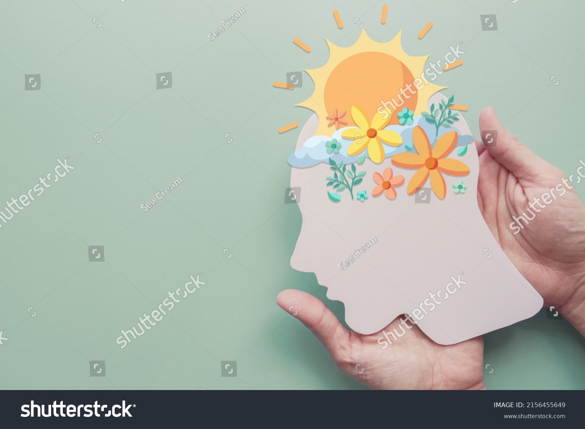

ConsejoPsi
"Orientación psicológica breve en línea, con calidez y experiencia profesional, para quienes buscan apoyo accesible y humano."
En ConsejoPsi, creemos que la salud mental necesita un espacio humano, accesible y empático. Ofrecemos orientación psicológica breve en línea, pensada como un puente entre la información general que se encuentra en internet o en alternativas tecnológicas, y el compromiso más intenso de la terapia formal. Con más de 13 años de experiencia atendiendo en instituciones y en práctica privada, brindamos un acompañamiento cercano, seguro y profesional. Nuestro objetivo es escuchar, comprender y ofrecer orientación que realmente responda a la persona que está del otro lado, manteniendo la calidad y calidez que no se encuentra en formatos impersonales.
¿Cómo funciona?
Solo envía un mensaje. Te responderemos lo antes posible con orientación clara y cercana, adaptada a tu situación.
- - Orientación psicológica breve y accesible, 100% en línea.
- - Escucha empática y trato humano, respaldado por más de 13 años de experiencia profesional.
- - Un puente accesible entre “buscar en internet” y “acudir a terapia”, evitando que te quedes sin apoyo.
- - Uso de soluciones digitales para acercar la atención sin perder el contacto humano.
- - Atención segura y confiable para quienes buscan un primer apoyo o prevención.
Nuestro modelo
Brindamos orientación breve basada en principios de la terapia cognitivo-conductual y enfoques humanistas. Creemos en el poder de ser escuchado con empatía y respeto.

¿Quiénes somos?
`Somos dos profesionales con posgrados en Psicología y más de 13 años de experiencia brindando atención psicológica en instituciones, organizaciones y en nuestra práctica privada.
A lo largo de estos años, hemos acompañado a personas de distintas edades —desde niños hasta adultos— en procesos de orientación, apoyo emocional y trabajo terapéutico. Nuestra formación integra diferentes enfoques, lo que nos permite adaptar la atención a las necesidades específicas de cada persona. Más allá de los modelos teóricos, nuestro enfoque es centrado en la persona, sirviendonos de los conocimientos y herramientas que sea más apropiados caso por caso.
Creemos profundamente en la importancia de hacer la psicología más accesible, empática y cercana. Por eso creamos este espacio: para ofrecer una alternativa humana frente a las respuestas impersonales de la inteligencia artificial o los sistemas de atención tradicionales, que muchas veces no logran responder a las condiciones de la realidad cotidiana.`
Psic. César Sánchez
Psicólogo clínico con enfoque en terapia breve cognitivo-conductual, complementado con formación en terapia sistémica y psicoanálisis lacaniano. Su práctica integra la subjetividad y la cultura para ofrecer una atención compleja y centrada en la persona. Experto en adicciones, salud mental, violencia de pareja y problemas conductuales en adultos.
Mtra. Selene Alvara
Maestra en Terapia Infantil. Experta en desarrollo infantil, educación sexual, abuso sexual, crianza respetuosa y salud mental infantil. Ofrece orientación profesional enfocada en las necesidades emocionales y psicológicas de niñas, niños y sus familias.